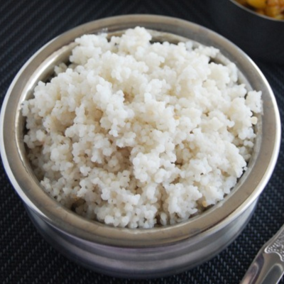
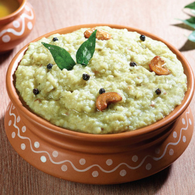

CONNECT WITH HEALTHY LIFE
CONNECT WITH HEALTHY LIFE

தேவையான பொருட்கள்:
செய்முறை:
1. ஒரு கப் வரகு அரிசி எடுத்து 10 முதல் 15 நிமிடங்கள் ஊற வைக்கவும்.
2. அதை நன்கு கழுவி 2 கப் தண்ணீர் சேர்க்கவும்.
3. தேவையான அளவு உப்பு சேர்த்து குக்கரில் 4 விசில் வரை வேக வைக்கவும்.

தேவையான பொருட்கள்:
செய்முறை:
1. ஒரு சிறிய பாத்திரம் எடுத்து வரகரிசியை அதில் இட்டு நன்கு ஊற வைக்கவும்.
2. இதற்கிடையில், ஒரு சிறிய பாத்திரம் அல்லது கடாயில் பாசிப்பருப்பு சேர்த்து நன்கு வறுத்துக்கொள்ளவும்.
 3. பிறகு அதை ஊற வைத்துள்ள வரகரிசியுடன் சேர்த்து அலசி எடுத்துக்கொள்ளவும்.
3. பிறகு அதை ஊற வைத்துள்ள வரகரிசியுடன் சேர்த்து அலசி எடுத்துக்கொள்ளவும்.
4. இப்போது ஒரு குக்கர் அல்லது பாத்திரம் எடுத்து அலசி வைத்துள்ள வரகரிசி மற்றும் பாசிப்பருப்பை இட்டு அவை வேக 2 கப்தண்ணீர் சேர்த்து கொள்ளவும்.
5. மேலும் அவற்றோடு 1 டீ ஸ்பூன் எண்ணெய் மற்றும் தேவையான அளவு உப்பு சேர்த்து கொதிக்க விடவும். குக்கர் என்றால் 4 – 5 விசில் போதுமானது.
6. நன்கு வெந்த பிறகு அவற்றை தாளிக்க, தனியாக ஒரு பாத்திரம் எடுத்து அதில் நெய் மற்றும் எண்ணெய் விடவும். அவை சூடானதும், முந்திரி பருப்பு, உளுந்தம் பருப்பு,காய்ந்த மிளகாய் கடைசியாக சீரகம் சேர்த்து வறுக்கவும். பிறகு அவற்றோடு கருவேப்பிலை சேர்த்துக்கொள்ளலாம்.
7. இவை தயார் ஆனதும், முன்னர் வேக வைத்துள்ள பொங்கலை சேர்த்து நன்கு கலந்து கொள்ளவும். இப்போது வரகரிசி பொங்கல் தயார்.
*அவற்றோடு சாம்பார் அல்லது தேங்காய் சட்னி சேர்த்து சாப்பிடலாம் .


தேவையான பொருட்கள்:
செய்முறை:
1. வரகு அரிசி மற்றும் பருப்பை நன்கு கழுவி 15 நிமிடம் நன்கு ஊற வைக்க வேண்டும்.
2. அடுப்பில் குக்கரை வைத்து அதில் 4 ஸ்பூன் எண்ணெய் ஊற்றி பின்பு அதில் கடுகு, சீரகம், வெந்தயம், கருவேப்பிலை, பச்சை மிளகாய் போட்டு நன்கு வதக்க வேண்டும்.
3. பின்பு வெங்காயம் தக்காளியை போட்டு நன்கு வதக்க வேண்டும் மஞ்சள் தூள் மற்றும் சாம்பார் பொடியை நன்கு சேர்த்து பச்சை வாசனை போகும் வரை நன்கு வதக்க வேண்டும்.
4. பின்பு அதில் நறுக்கி வைத்துள்ள காய்கறிகள் அனைத்தையும் சேர்த்து நன்கு மசாலா சேரும் வரை வதக்க வேண்டும்.
5. காய்கறிகள் நன்கு வதங்கிய உடன் அதில் சிறிதளவு புளியை சேர்க்கவேண்டும் புளி வாசனை போனவுடன் நன்கு கொதிக்க வேண்டும் அதன்பிறகு 2 வீசல் வரவும் அடுப்பை அணைக்க வேண்டும்.
6. ஒரு கடாயில் நெய் ஊற்றி சீரகம், காய்ந்த மிளகாய் சேர்த்து தாளித்து சாதத்துடன் கிளறிவிட வேண்டும் கொத்தமல்லி சேர்த்து இறக்கினால் சுவையான சாம்பார் சாதம் ரெடி.

தேவையான பொருட்கள்:
செய்முறை:
1. ஒரு கப் வரகு அரிசியை வெறும் வாணலியில் நன்கு சூடு ஏறும் வரை வறுத்துக் கொள்ளவும். தண்ணீரில் நன்கு கழுவி வைத்துக் கொள்ளவும்.
மேற்கூறிய காய்கறிகளை பொடியாக அரிந்து கொள்ளவும்.
2. வாணலியில் எண்ணெய் சேர்த்து காய்ந்தவுடன் கடுகு, உளுத்தம் பருப்பு, கடலைப் பருப்பு, முந்திரி சேர்த்து சிவக்க வறுக்கவும்.
3.பிறகு பச்சை மிளகாய், வெங்காயம்,மற்ற காய்கறிகளை சேர்த்து நன்கு வதக்கவும். காய்கறிகள் நன்கு வதங்கியவுடன் ஒரு கப்புக்கு மூன்றரை
கப் வரை தண்ணீர் சேர்த்து அதில் உப்பு சேர்த்து கொதிக்கவிடவும். மஞ்சள்தூள் சேர்த்துக் கொள்ளவும்.
4.தாளித்த தண்ணீர் கொதிக்க ஆரம்பித்தவுடன் சாமை அரிசியை சேர்த்து நன்கு கலந்து விடவும்.
பிறகு இதை குக்கருக்கு மாற்றி ஒரு சவுண்ட் விடவும். பிறகு அடுப்பை சிம்'மில் வைத்து இரண்டு சவுண்ட் வரை விடவும்.
5.குக்கரில் ஆவி அடங்கியவுடன் திறந்து ஒரு ஸ்பூன் நெய் சேர்த்து நன்றாக கரண்டி கொண்டு கிளறி விடவும். சூடாக பரிமாறவும்.
தேவையான பொருட்கள்:
செய்முறை:
1. வரகரிசியை நன்றாக சுத்தம் செய்து கழுவி வைக்கவும்.
2. கடாயை அடுப்பில் வைத்து எண்ணெய் ஊற்றி சூடானதும் அதில் கடுகு, உளுந்தம் பருப்பு, கடலைப்பருப்பு போட்டு நன்றாக வறுக்க வேண்டும்.
3. அடுத்து அதில் பெருங்காயத்தூள், வெங்காயம், ப.மிளகாய் சேர்த்து வதக்க வேண்டும்.
4. அடுத்து அதில் வரகரிசி குருணையையும் சேர்த்து 1 கப் குருணைக்கு 3 கப் தண்ணீர் வீதம் விட்டு கிளற வேண்டும்.
5. நன்றாக வெந்ததும் வரும் போது உப்பு, கறிவேப்பிலை, கொத்தமல்லி இலை சேர்த்து நன்றாக கிளறி பரிமாற வேண்டும். * சத்தான வரகரிசி உப்புமா ரெடி.
தேவையான பொருட்கள்:
செய்முறை:
1. ஒரு குக்கரில் எண்ணெய் சேர்த்து இதில் நறுக்கிய சின்ன வெங்காயம் மற்றும் பூண்டு சேர்த்து வதக்கவும் கூடவே சீரகத்தை சேர்த்து தாளிக்கவும்.
வதங்கியதும் தக்காளியை சேர்த்து வதக்கிக் கொள்ளவும்.
2. பின் 10 நிமிடம் ஊற வைத்த வரகு அரிசியை தண்ணீர் வடித்து சேர்த்து வதக்கவும். விருப்பப்பட்டால் பாசிப்பருப்பு அல்லது பச்சை பயறை சேர்த்துக் கொள்ளலாம்.
3. இதில் மஞ்சள் தூள் மற்றும் தேவையான அளவு தண்ணீர் சேர்த்து தேவையான அளவு உப்பு சேர்த்து கலந்து விட்டு குக்கரை மூடி அரை மணி நேரம் சிறு தீயில் வேக விடவும்.
*ஆரோக்கியமான வரகு அரிசி கஞ்சி தயார்.